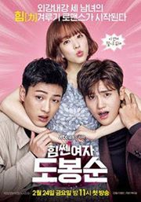
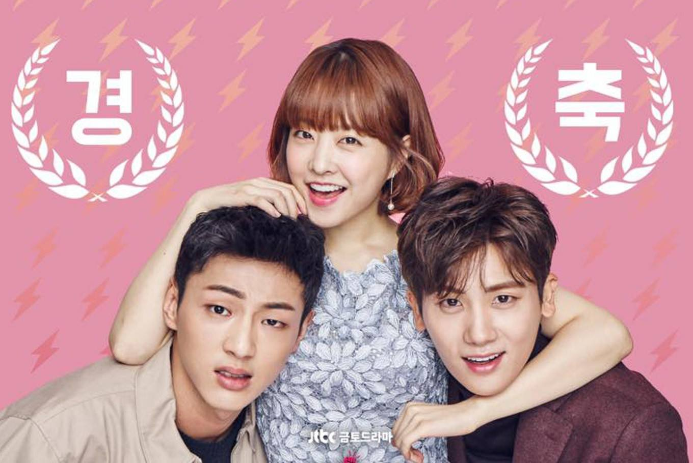
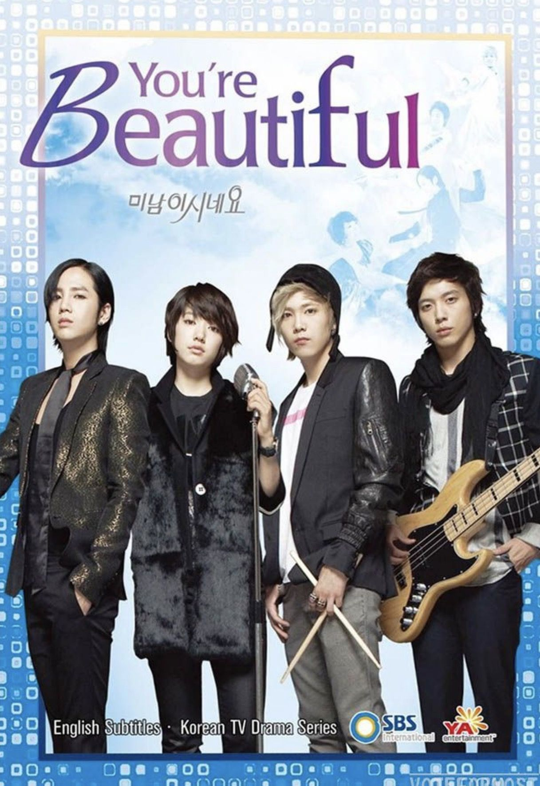
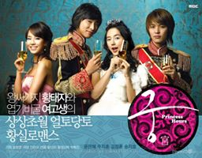

- Descendants of the Sun
Episodes: 16 + 3 Special Episodes
Synopsis:
This story tells of doctors stationed in the fictional war zone of Urk (Uruk), and follows the love story that develops between a surgeon (Kang Mo-yeon) and a special forces officer (Yoo Shi-jin), both elite in their respective fields. The story will track both their personal and professional struggles while exploring issues about the value of life.
Casts:
Song Joong Ki as Captain Yoo Shi Jin (a.k.a. Big Boss)
Song Hye Kyo as Professor Kang Mo Yun (a.k.a. Beauty)
Jin Goo as Chief Master Sergeant Seo Dae Young
Kim Ji Won as Lieutenant Yoon Myung Joo
Medias:
Episodes: 32
Synopsis:
The story of a man who lives an isolated life due to a severe allergy to other people but meets and falls in love with a woman who pretends to be a robot.
Casts:
Yoo Seung Ho as Kim Min Kyu
Chae Soo Bin as Jo Ji Ah // Aji – 3
Uhm Ki Joon as Hong Baek Gyun
Medias:
Episodes: 16
Synopsis:
Sekang High School is the most prestigious private high school in Seoul's Gangnam District, and Go Eun Byul is the most popular girl there. Meanwhile, her identical twin Lee Eun Bi is living in an orphanage and is being bullied at school. Then one day, Eun Byul mysteriously disappears. Soon after, Eun Bi loses her memories and is mistaken as being Eun Byul. Eun Bi then starts living her life as Eun Byul.
Casts:
Kim So Hyun as Lee Eun Bi // Go Eun Byul
Nam Joo Hyuk as Han Yi An
Yook Sung Jae as Gong Tae Kwang
Media:
Episode: 16 Synopsis
Do Bong Soon is a woman with superhuman strength. With her strength she gets hired as the bodyguard of the spoiled CEO of the gaming company Ainsoft, Ahn Min Hyuk. Min Hyuk is being threatened by an unknown enemy, and is determined to solve the problem himself out of his distaste and distrust of the police. In Guk Doo is a policeman and Bong Soon’s crush since childhood. When series of kidnappings occur in Bong Soon’s small, quiet neighborhood Dobong-dong, their little community is thrown into chaos. Combined with the job of protecting her boss’s life, Bong Soon’s already unusual life has gone wild. However, she must be careful; if she missuses her strength, she could lose it forever.
Casts:Park Bo Young as Do Bong Soon
Park Hyung Shik as Ahn Min Hyuk
Ji Soo as In Gook Doo
Media:
 
Episodes: 20
Synopsis:
In 2017, Son Oh Gong and Ma Wang are in conflict with each other as they look for a true light in a dark world where evil thrives. Having made a contract with Seon Mi 25 years ago, entitling her to seek help from Son Oh Gong whenever she calls him in exchange for letting him free, the two meet again in a fateful encounter. From there, Son Oh Gong is bound to his protective role towards Seon Mi, the little girl he had met years ago.
Cast:
Lee Seung Gi as Son Oh Gong
Oh Yeun Seo as Jin Sun Mi // Sam Jang
Jang Gwang as Sa Oh Jeong // Yoon Dae Shik
Cha Seong Won as Woo Ma Wang // Woo Hwi Chul
Lee Hong Ki as Jo Pal Gye // P.K.
Media:
Episodes: 20
Synopsis:
The idealistic Choi In Ha has her work cut out for her when she becomes a broadcast journalist, especially when she suffers from a condition known as “Pinocchio syndrome,” which makes her break out into hiccups whenever she tells a lie. Her rookie colleagues include Choi Dal Po, whose shabby appearance masks his true eloquence and sharp memory; Seo Bum Jo, a wealthy heir who has had everything handed to him in life; and Yoon Yoo Rae, whose fangirl knowledge comes in handy in covering the news. The 20-something newbie reporters pursue justice as they try to discover themselves in the process.
Cast:
Lee Jong Suk as Choi Dal Po // Ki Ha Myung
Park Shin Hye as Choi In Ha
Kim Young Kwang as Seo Bum Jo
Lee Yoo Bi as Yoon Yoo Rae
Media:

Episode: 16
Synopsis:
The management company of the idol group A.N.JELL insisted on adding a new singer to the group as the lead vocal, Tae Kyung's voice was hurting. However,the new member, Mi Nam, had to go to the States to repair a botched eye job just before signing the contract. His agent came up with the idea of having his twin sister, Mi Nyu,to stand in for him and pretend that she was her brother. The two of them grew up in an orphanage and Mi Nyu, who was all set to become a nun, agreed to this charade as she didn't want to spoil her brother's chance of fame which would make it easier to look for their mother.
Cast:
Jang Geun Suk as Hwang Tae Kyung
Park Shin Hye as Go Mi Nam // Go Mi Nyeo
Jung Yong Hwa as Kang Shin Woo
Lee Hong Ki as Jeremy
Media:

Episode: 16
Synopsis:
Cardiothoracic surgeon Oh Yeon Joo's father mysteriously went missing while writing the last chapter of his webtoon "W". Yeon Joo goes to his office and is shocked to see a scene of a bloodied Kang Cheol, the main character of W, on her father's monitor. While reading something left behind by her father, a hand from the monitor pulled her in. She found herself on the rooftop of a building, next to a man lying down in blood. She manages to save him and realizes that the person she saved was Kang Cheol. She later discovers she can only enter and leave the webtoon depending on Kang Cheol's feelings.
Cast:
Lee Jong Suk as Kang Chul
Han Hyo Joo as Oh Yeon Joo
Media:

Episodes: 24
Synopsis:
Chae Gyeong is an ordinary art high school student. One day, she hears totally unexpected news that, based on her grandfathers will, she must marry the unemotional Crown Prince Lee Shin who attends the same high school. Chae Gyeong resists the proposal but reluctantly marries him to help her debt-ridden family. As she struggles to adapt herself to the proper manners and royal duties of palace life and to her disagreeable husband, Lee Shin's sentimental cousin and second-in-line to the throne, Yul, steps into her life. She feels like she can rely on Yul to help her, but cant help worrying about her haughty, cold-hearted husband. To help bridge this gap, the senior members of the royal family take some special measures to get them to spend the night together.
Cast:
Yoon Eun Hye as Shin Chae Kyung
Joo Ji Hoon as Lee Shin
Song Ji Hyo as Min Hyo Rin
Kim Jung Hoon as Lee Yul
Media:

Episode: 16
Synopsis:
One day after Cha Dae Woong runs away from his grandfather, he accidentally frees a nine-tailed fox who was trapped in a painting for about 500 years. He didn't realize what he has done until the Gumiho (nine-tailed fox), who took the form of a beautiful woman, appeared in front of him. Dae Woong was so frightened that he ran away from her and became severely injured. The Gumiho saved him by giving him her most precious bead to share with him the mystic fox strength, as she owed him her freedom. The Gumiho then asked him to help her become human and teach her how to act like one. As time goes by, their mutual relationship grew deeper as they start to fall for each other.
Cast:
Lee Seung Gi as Cha Dae Wong
Shi Min Ah as Gumiho
Noh Min Woo as Park Dong Joo
Media:
About Anime